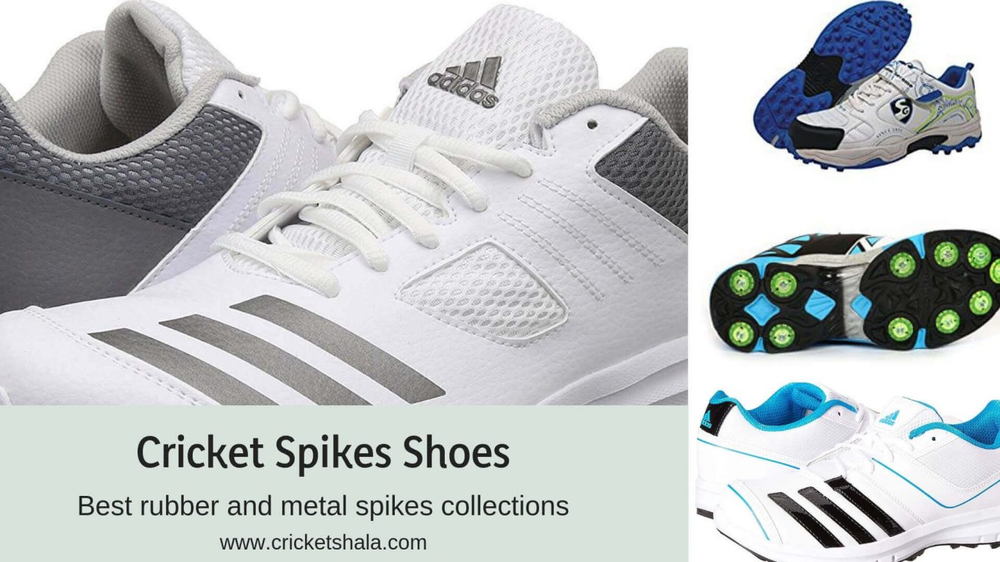
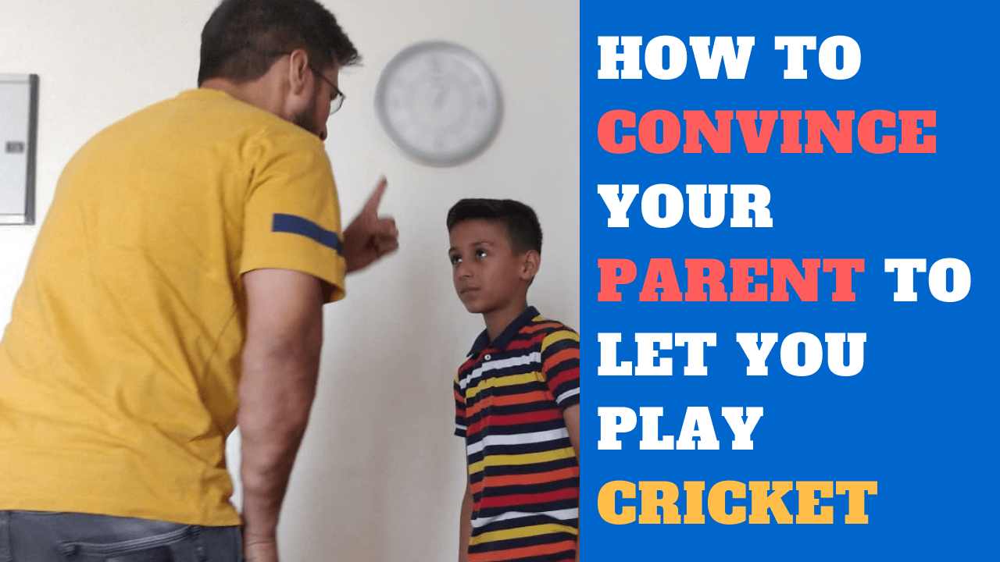
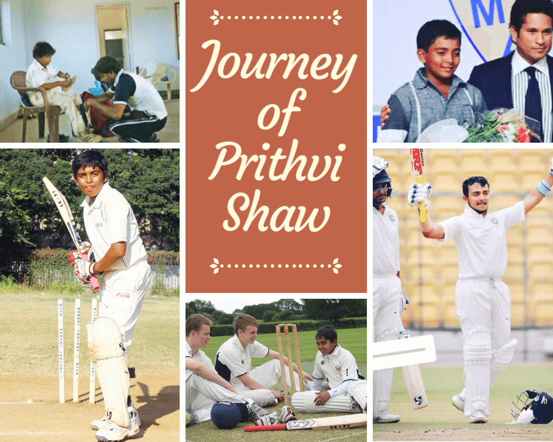
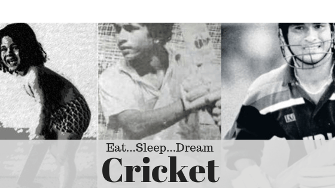
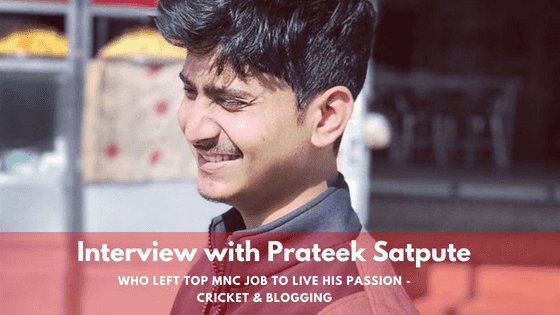
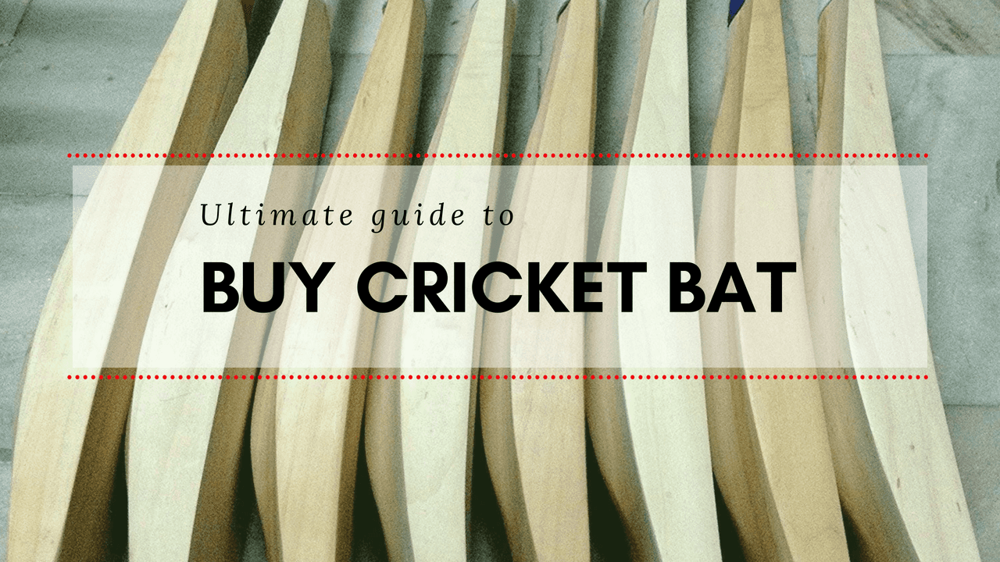
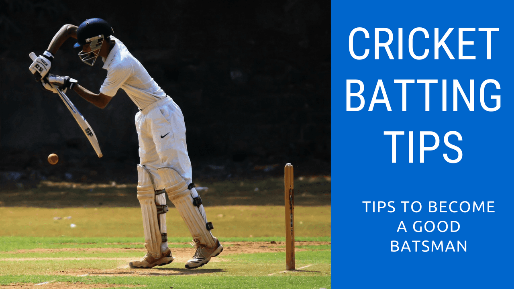
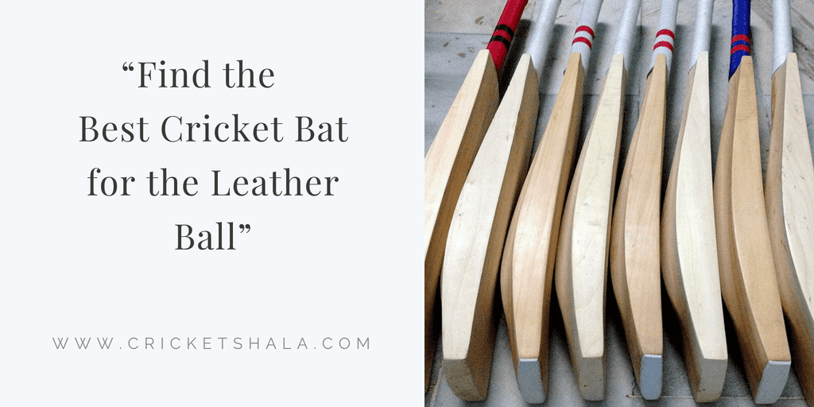

Home
Tips & tactics
Product reviews
Interviews & Bio
Do you want to
improve your cricket skills?
Finds the drills, basics & coaching videos every week directly in your
inbox
Yes,I want to improve!

Cricket spikes shoes – Best rubber and metal spikes collections in 2019
What you look when you go to buy your cricket spikes shoes? Well, I feel many of the players especially
Continue reading
Spektakom power bat sticker – Anil Kumble & Microsoft are making a smart cricket bat sticker
Anil Kumble – he is a former Indian cricketer and captain of test and ODI team. He is the third
Continue reading

How to convince your parents to allow you to play cricket
You look dream every day and night to become a cricketer, but your parent doesn’t allow you to play, they
Continue reading

Prithvi Shaw biography – All about him from childhood to international cricket
In a nation of 1.3 billion people, you will hardly find an individual, who does not watch or support cricket.
Continue reading

How to become cricketer in India – a proven strategy
Do you have a DREAM to become a cricketer? Are you a parent like me who looks DREAM for kids
Continue reading
Cricket bat knocking – How to knock in & oiling of a cricket bat
A bat is your most priceless cricket gear, isn’t it? When you went to buy a bat, You should have
Continue reading

Interview with Prateek Satpute – Who left top MNC job to live his passion about cricket and blogging
If you are a cricket lover and want to be updated with the latest stories of the cricket, Prateek’s blog
Continue reading

Ultimate guide to buy cricket bat in 2018
What things do you look when you buy a bat? You go to the shop near to you, ask the
Continue reading

Cricket batting tips – learn batting skills in cricket
I love cricket and my son too. My 9-year-old son goes to the cricket academy for practice and sometimes me
Continue reading

Best cricket bat for the leather ball in 2018
Selecting the bat was always a big hassle for me, assuming same for your either. There are a lot of
Continue reading
About me
Contact me
Privacy Policy
Terms of use